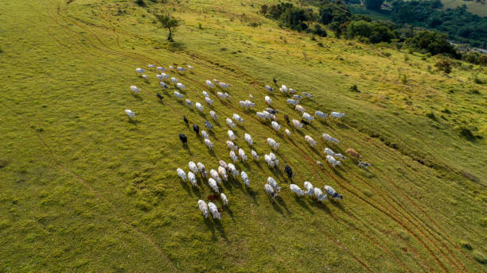

- Project Title: Healthier Meat
- Description: Meat goat nutrition plays a significant role in maintaining optimal health and promoting growth to the entire populations
I am a Ph.D. Student at Tuskegee University Integrative BioScience Program
My deep passion passion are to improve animal health, reproduction, parasitology and animal nutrution.
See my class project on GitHub
Connect with me via LinkedIn
Contact me via Email